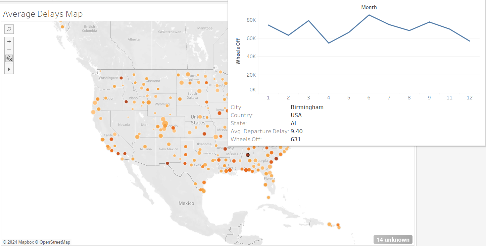

Come with me on a journey through 2015 flight delay data. Let’s start by looking at a map of the airports we’re studying (Map on Tableau Public)

This map shows both the average departure delay (encoded by bubble size) as well as how busy each airport is (encoded by color – darker dots are busier airports). I calculated an airport’s busy-ness by summing all “wheels off” events. What I found most interesting about this map is that the busiest airports do not have the longest delays! Some of the busiest airports, like Chicago and Atlanta, have average delays equal to smaller airports like Mammoth Lakes, California and Santa Fe. In addition, you can hover over an airport to see a 12-month history of the number of flights departing from it:

You may also notice that these maps largely exclude airports in Alaska and Hawaii. I chose to focus on The Lower 48 so that differences in bubble size would be clearer. When the map pans out to include all airports, the dots become too small to differentiate.
This educational webpage was invaluable in creating a visualization in the tooltip: Create Views for Tooltips (Viz in Tooltip) - Tableau
This educational webpage was invaluable in creating a visualization in the tooltip: Create Views for Tooltips (Viz in Tooltip) - Tableau
Now lets review which airlines have the most delays: Graph on Tableau Public.
There are two overlapping graphs here. The background is a bar graph (using gantt chart marks) with a mark for each time a plane was delayed. The mark’s position shows how long the delay lasted. I like this encoding because it shows that some airlines, like American Airlines, have not-all-that-rare delays of over 700 minutes! The downside of this encoding is that it obscures the density of delays toward the bottom of the graph, which may mislead viewers into thinking that longer delays are more usual than they really are.
To make up for the obscured density, I included a second graph in the foreground showing the airline’s average delay. I originally included this information as a line graph on the same axis as the background graph, but the average delay is so much less than the max delay that it was hard to see the line! Instead, I re-encoded the information as text. On each bar, at the bottom, you can see the airline’s average delay length. For Spirit airlines, it’s ~17 minutes. For Hawaiian, it’s less than a minute!
This Q&A helped me to turn that line graph into text: Adding legend label to line chart
To make up for the obscured density, I included a second graph in the foreground showing the airline’s average delay. I originally included this information as a line graph on the same axis as the background graph, but the average delay is so much less than the max delay that it was hard to see the line! Instead, I re-encoded the information as text. On each bar, at the bottom, you can see the airline’s average delay length. For Spirit airlines, it’s ~17 minutes. For Hawaiian, it’s less than a minute!
This Q&A helped me to turn that line graph into text: Adding legend label to line chart
Now let’s look at different causes of airplane delay: Graph on Tableau Public.
This chart compares the causes of an airplane being delayed. At the bottom is the very infrequent security delay, and at the top is the ‘late aircraft delay,’ which the data source (Kaggle.com) says is “Delay caused by aircraft.” That definition isn’t very descriptive; maybe if an airline is interested in reducing this type of delay, it could start by breaking this cause down into more granular causes.
In any case, this chart also shows the change in average delay (sorted by cause) month-over-month. For most causes the average delay doesn’t change much over the course of a year, but for ‘late aircraft delay,’ the average delay peaks in the summer and at the end of the year (probably during the holidays).
I originally differentiated the lines using color and a legend (which are still present), but found that including a label for each line made it even easier to compare the different types of delay.
Finally, I wondered whether an airline’s size is correlated with the most impactful type of delay. To find out, I created a separate worksheet that sorted each airline by the number of “wheels off” events (as a proxy for its size). Then, I grouped the largest airlines and created a filter that allows you to include just the largest airlines, or just the smallest, or both.
In any case, this chart also shows the change in average delay (sorted by cause) month-over-month. For most causes the average delay doesn’t change much over the course of a year, but for ‘late aircraft delay,’ the average delay peaks in the summer and at the end of the year (probably during the holidays).
I originally differentiated the lines using color and a legend (which are still present), but found that including a label for each line made it even easier to compare the different types of delay.
Finally, I wondered whether an airline’s size is correlated with the most impactful type of delay. To find out, I created a separate worksheet that sorted each airline by the number of “wheels off” events (as a proxy for its size). Then, I grouped the largest airlines and created a filter that allows you to include just the largest airlines, or just the smallest, or both.
Here, you can see that not much changes when we’re just looking at the biggest airlines.
With smaller airlines, you can see that there’s more variation in delay causes, month-over-month, and that air systems tend to play a bigger role.
Finally, let’s focus on security delays and weather delays. Dashboard on Tableau Public.
Finally, let’s focus on security delays and weather delays. Dashboard on Tableau Public.

I wanted to compare phenomena that I thought would appear regionally: weather delays (in areas with extreme weather) and security delays (occurring at major hubs or immigration centers). Here, I can see that security delays are not focused where I thought they would be. Instead, the biggest security delays are at Nantucket, Massachusetts and Adak, Alaska. I did a quick internet search and found that Nantucket houses billionaires and government dignitaries, so increased security would make sense there. Adak is the westernmost airport in the U.S., has been affiliated with at least two branches of the U.S. military, and often acts as a refueling hub for transnational flights. There are probably some stories, but I couldn’t easily find them online.
Weather delays do seem to be something of a regional phenomenon. There is a cluster of weather delays in Colorado, which has very high elevation, and other clusters near the Great Lakes and the Gulf of Mexico. There’s also a big problem with weather delays in Minot, North Dakota, which I happen to know gets very cold.
I included graphs that rank each airport by the delay caused by security and weather issues. It’s interesting to me that, according to the graphs, the problems are all concentrated at a few airports.
Finally, I added a filter to this dashboard so I can toggle between data from the largest airlines and the smallest airlines. The only major difference I found when toggling back and forth is that Lihue, Hawaii seems to have a lot of security delays when it comes to smaller airlines.
Weather delays do seem to be something of a regional phenomenon. There is a cluster of weather delays in Colorado, which has very high elevation, and other clusters near the Great Lakes and the Gulf of Mexico. There’s also a big problem with weather delays in Minot, North Dakota, which I happen to know gets very cold.
I included graphs that rank each airport by the delay caused by security and weather issues. It’s interesting to me that, according to the graphs, the problems are all concentrated at a few airports.
Finally, I added a filter to this dashboard so I can toggle between data from the largest airlines and the smallest airlines. The only major difference I found when toggling back and forth is that Lihue, Hawaii seems to have a lot of security delays when it comes to smaller airlines.